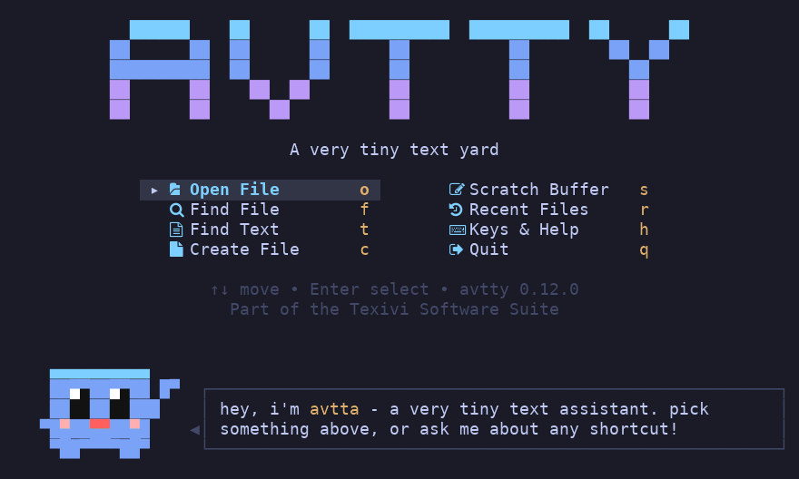
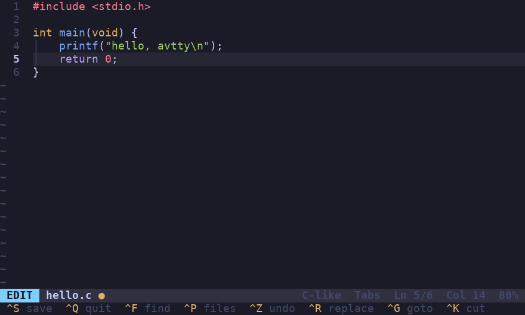

AVTTY
I wrote AVTTY for minimal systems. I wanted an editor that is small enough to run on one, and that needs no setup before it is useful.

The mascot, avtta, is inspired by drawings of the Claude Code mascot, from this illustration pack. I also wanted the editor to be friendly, because a terminal editor tends to be cold, and a small character that shows up when something matters helps.

The source is at github.com/texivi/avtty.